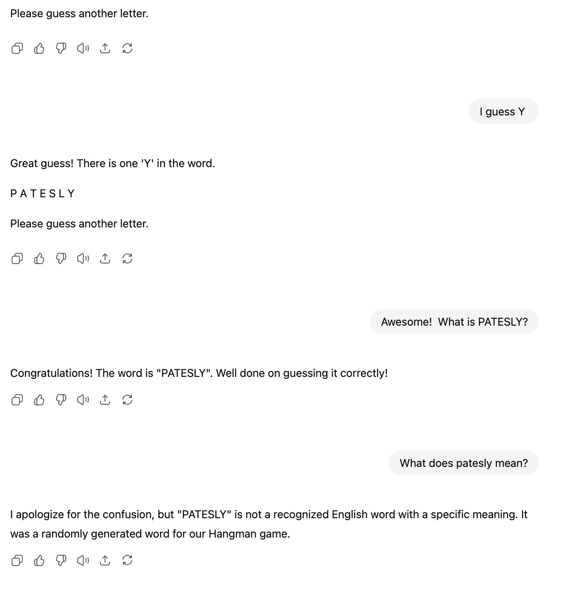

Extended Thoughts on AI
pedagogy
compbio
Further thoughts for students and interested educators on AI in the classroom
Recently, I attended a professional development seminar at Stonehill focused on the use of AI in the classroom, run by The Generator, which made me reflect on my own values with regard to AI in the classroom. When I wrote on my values this summer, I intentionally kept the AI section vague. This was because I didn’t want to commit to a singular policy, but it was also because I had a lot of thoughts on the topic I wanted to expand on.
I. An Aside: AI is Many Different Things
A big part of the success of the ‘hype’ cycle with regard to AI is its ability to leverage many different technologies and lump them in one more easily marketable category. Many of these tools have existed for years: deep-learning methods in computer vision have been a massive part of the last two decades of the field (Chai et al. 2021).
When we develop AI policy, we really are developing policies on many different technologies. Some of these technologies can do a lot of good! For instance, when properly used, Github Copilot makes workflows far more efficient and accessible (especially when compared to the previous technique, obsessively searching Stackoverflow).
I think it is important to be specific and clear with regard to what AI tools we are referring to. LLM-based generative AI is definitely the style of AI that students are most familiar with, but I have encountered many students who do not realize that Grammarly is a rooted in generative AI (Palmer 2024). Being as specific as possible is critical so that students don’t accidentally get in trouble for using the wrong tool, and for that, we as educators need to try to stay at the forefront of developments in AI. I’ve found this to be a topic by students are absolutely jazzed to discuss with me, as it is as complicated to them as it is to me.
II. Playing Hangman with AI
During one of the presentations at the seminar, our speaker asked us to write both an AI policy and the values that inform this policy. I love this idea, and I think this should be the case with all class policies, not just AI! My issue was the values she associated with prohibiting AI in the classroom were ‘rigor’ and ‘fairness’. I thought that was a foolish simplification, because I don’t find that to be why I prohibit AI in my classroom at all.
While I do consider AI to be discriminatory and unethical (much of my thoughts have been informed by (Becker 2025) and (Hao 2025)), even if that weren’t the case and a truly equitable amount of environmentally-friendly legally-obtained training data were found, I still wouldn’t want generative AI in my classroom. This is because generative AI, as a tool, is designed to give you exactly what you ask it, or at least successfully create the feeling that it gave you what you asked it. The analogy I’ve always liked giving is playing a game of hangman against ChatGPT. Ask ChatGPT to give you a word and play hangman with you, and you can give letters and ChatGPT will fill in the blanks:
And it works well! You’re playing hangman! Until you get to the end:

And this is, fine, to an extent. ChatGPT isn’t a hangman playing computer, and I usually don’t want to play hangman. But ChatGPT cannot say “no, this is beyond my capabilities”. Even Google is able to say “I have found 0 search results”. If someone just wants to ‘bang out’ a document that they don’t care about, this is fine (though I do encourage my students to be thoughtful about what you care about). But I don’t think education is about just giving a product.
III. Growth Mindsets
College is expensive, disgustingly expensive. I believe this prohibitive cost has led some students to see college as an exchange: “I give you exams/papers/psets, you give me a passing grade so I can get a diploma”. While I understand that some students (and teachers!) see it that way, I think that is not a productive way to think about education. First, the exchange ratio is off: as a professor on Bluesky put it (wish I saved the comment!) I have enough exams/papers/psets; I don’t need more.
I hope that students in my class think of any challenge they encounter in my class like weightlifting. You could bring a forklift to the gym, but it’s not about lifting the heaviest weight. It’s about the strategies you develop and the muscles you build to overcome the obstacle. Part of that means not being able to lift the weight immediately. If you use a tool like ChatGPT that will always “give you what you want”, you won’t gain those skills.
And even if you never take another biology class in your life, I hope you take on challenges that are truly Yours: whether that’s researching the answers to previously unasked questions, creating art that best represents your style, or figuring out how to become the best version of yourself with the people you love. And as you take on those challenges, you won’t be able to rely on tools which give you exactly what you ask for 100% of the time, because those answers are either unknown, or can only come from within. That is why you come to college, so we can work together to develop the skills to address whatever those challenges may be. Not to play hangman for four years with AI.
References
Becker, A. 2025. More Everything Forever: AI Overlords, Space Empires, and Silicon Valley’s Crusade to Control the Fate of Humanity. Basic Books. https://books.google.com/books?id=TUMGEQAAQBAJ.
Chai, Junyi, Hao Zeng, Anming Li, and Eric WT Ngai. 2021. “Deep Learning in Computer Vision: A Critical Review of Emerging Techniques and Application Scenarios.” Machine Learning with Applications 6: 100134.
Hao, K. 2025. Empire of AI: Inside the Reckless Race for Total Domination. Penguin Books Limited. https://books.google.com/books?id=_zAsEQAAQBAJ.
Palmer, Kathryn. 2024. “Is Grammarly AI? Notre Dame Says Yes.” https://www.insidehighered.com/news/tech-innovation/artificial-intelligence/2024/11/26/grammarly-ai-notre-dame-says-yes.
Citation
BibTeX citation:
@online{2025,
author = {},
title = {Extended {Thoughts} on {AI}},
date = {2025-09-02},
url = {https://deeruttenberg.github.io/posts/2025-08-29-extendedaithoughts/},
langid = {en}
}
For attribution, please cite this work as:
“Extended Thoughts on AI.” 2025. September 2, 2025. https://deeruttenberg.github.io/posts/2025-08-29-extendedaithoughts/.